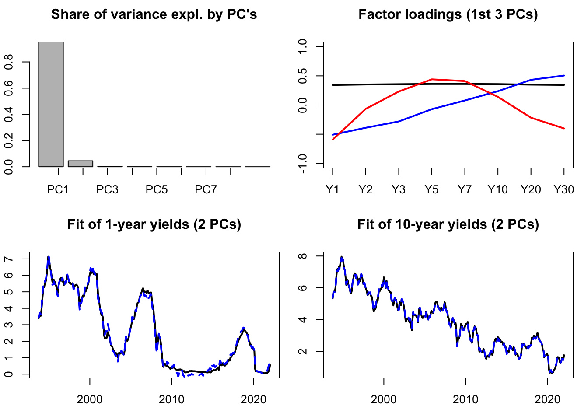
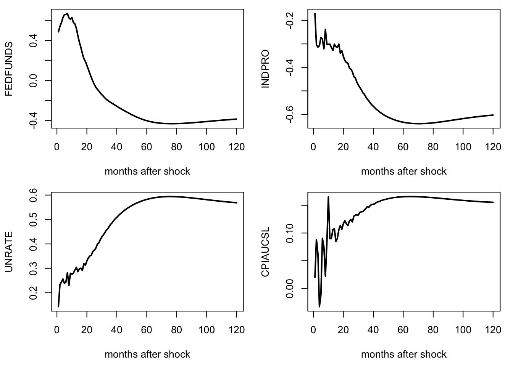

Chapter 10 Factor-Augmented VAR
VAR models are subject to the curse of dimensionality: If \(n\), is large, then the number of parameters (in \(n^2\)) explodes.
In the case where one suspects that the \(y_{i,t}\)’s are mainly driven by a small number of random sources, a factor structure may be imposed, and principal component analysis (PCA, see Appendix 10.1) can be employed to estimate the relevant factors (Bernanke, Boivin, and Eliasz (2005)).
10.1 Principal component analysis (PCA)
Principal component analysis (PCA) is a classical and easy-to-use statistical method to reduce the dimension of large datasets containing variables that are linearly driven by a relatively small number of factors. This approach is widely used in data analysis and image compression.
Suppose that we have \(T\) observations of a \(n\)-dimensional random vector \(x\), denoted by \(x_{1},x_{2},\ldots,x_{T}\). We suppose that each component of \(x\) is of mean zero.
Let denote with \(X\) the matrix given by \(\left[\begin{array}{cccc} x_{1} & x_{2} & \ldots & x_{T}\end{array}\right]'\). Denote the \(j^{th}\) column of \(X\) by \(X_{j}\).
We want to find the linear combination of the \(x_{i}\)’s (\(x.u\)), with \(\left\Vert u\right\Vert =1\), with “maximum variance.” That is, we want to solve: \[\begin{equation} \begin{array}{clll} \underset{u}{\arg\max} & u'X'Xu. \\ \mbox{s.t. } & \left\Vert u \right\Vert =1 \end{array}\tag{10.1} \end{equation}\]
Since \(X'X\) is a positive definite matrix, it admits the following decomposition: \[\begin{eqnarray*} X'X & = & PDP'\\ & = & P\left[\begin{array}{ccc} \lambda_{1}\\ & \ddots\\ & & \lambda_{n} \end{array}\right]P', \end{eqnarray*}\] where \(P\) is an orthogonal matrix whose columns are the eigenvectors of \(X'X\).
We can order the eigenvalues such that \(\lambda_{1}\geq\ldots\geq\lambda_{n}\). (Since \(X'X\) is positive definite, all these eigenvalues are positive.)
Since \(P\) is orthogonal, we have \(u'X'Xu=u'PDP'u=y'Dy\) where \(\left\Vert y\right\Vert =1\). Therefore, we have \(y_{i}^{2}\leq 1\) for any \(i\leq n\).
As a consequence: \[ y'Dy=\sum_{i=1}^{n}y_{i}^{2}\lambda_{i}\leq\lambda_{1}\sum_{i=1}^{n}y_{i}^{2}=\lambda_{1}. \]
It is easily seen that the maximum is reached for \(y=\left[1,0,\cdots,0\right]'\). Therefore, the maximum of the optimization program (Eq. (10.1)) is obtained for \(u=P\left[1,0,\cdots,0\right]'\). That is, \(u\) is the eigenvector of \(X'X\) that is associated with its larger eigenvalue (first column of \(P\)).
Let us denote with \(F\) the vector that is given by the matrix product \(XP\). The columns of \(F\), denoted by \(F_{j}\), are called factors. We have: \[ F'F=P'X'XP=D. \] Therefore, in particular, the \(F_{j}\)’s are orthogonal.
Since \(X=FP'\), the \(X_{j}\)’s are linear combinations of the factors. Let us then denote with \(\hat{X}_{i,j}\) the part of \(X_{i}\) that is explained by factor \(F_{j}\), we have: \[\begin{eqnarray*} \hat{X}_{i,j} & = & p_{ij}F_{j}\\ X_{i} & = & \sum_{j}\hat{X}_{i,j}=\sum_{j}p_{ij}F_{j}. \end{eqnarray*}\]
Consider the share of variance that is explained—through the \(n\) variables (\(X_{1},\ldots,X_{n}\))—by the first factor \(F_{1}\): \[\begin{eqnarray*} \frac{\sum_{i}\hat{X}'_{i,1}\hat{X}_{i,1}}{\sum_{i}X_{i}'X_{i}} & = & \frac{\sum_{i}p_{i1}F'_{1}F_{1}p_{i1}}{tr(X'X)} = \frac{\sum_{i}p_{i1}^{2}\lambda_{1}}{tr(X'X)} = \frac{\lambda_{1}}{\sum_{i}\lambda_{i}}. \end{eqnarray*}\]
Intuitively, if the first eigenvalue is large, it means that the first factor captures a large share of the fluctutaions of the \(n\) \(X_{i}\)’s.
By the same token, it is easily seen that the fraction of the variance of the \(n\) variables that is explained by factor \(j\) is given by: \[\begin{eqnarray*} \frac{\sum_{i}\hat{X}'_{i,j}\hat{X}_{i,j}}{\sum_{i}X_{i}'X_{i}} & = & \frac{\lambda_{j}}{\sum_{i}\lambda_{i}}. \end{eqnarray*}\]
Let us illustrate PCA on the term structure of yields. The term strucutre of yields (or yield curve) is know to be driven by only a small number of factors (e.g., Litterman and Scheinkman (1991)). One can typically employ PCA to recover such factors. The data used in the example below are taken from the Fred database (tickers: “DGS6MO”,“DGS1”, …). The second plot shows the factor loardings, that indicate that the first factor is a level factor (loadings = black line), the second factor is a slope factor (loadings = blue line), the third factor is a curvature factor (loadings = red line).
To run a PCA, one simply has to apply function prcomp to a matrix of data:
Code
Let us know visualize some results. The first plot of Figure 10.1 shows the share of total variance explained by the different principal components (PCs). The second plot shows the facotr loadings. The two bottom plots show how yields (in black) are fitted by linear combinations of the first two PCs only.
Code
par(mfrow=c(2,2))
par(plt=c(.1,.95,.2,.8))
barplot(PCA.yds$sdev^2/sum(PCA.yds$sdev^2),
main="Share of variance expl. by PC's")
axis(1, at=1:dim(yds)[2], labels=colnames(PCA.yds$x))
nb.PC <- 2
plot(-PCA.yds$rotation[,1],type="l",lwd=2,ylim=c(-1,1),
main="Factor loadings (1st 3 PCs)",xaxt="n",xlab="")
axis(1, at=1:dim(yds)[2], labels=colnames(yds))
lines(PCA.yds$rotation[,2],type="l",lwd=2,col="blue")
lines(PCA.yds$rotation[,3],type="l",lwd=2,col="red")
Y1.hat <- PCA.yds$x[,1:nb.PC] %*% PCA.yds$rotation["Y1",1:2]
Y1.hat <- mean(USyields$Y1) + sd(USyields$Y1) * Y1.hat
plot(USyields$date,USyields$Y1,type="l",lwd=2,
main="Fit of 1-year yields (2 PCs)",
ylab="Obs (black) / Fitted by 2PCs (dashed blue)")
lines(USyields$date,Y1.hat,col="blue",lty=2,lwd=2)
Y10.hat <- PCA.yds$x[,1:nb.PC] %*% PCA.yds$rotation["Y10",1:2]
Y10.hat <- mean(USyields$Y10) + sd(USyields$Y10) * Y10.hat
plot(USyields$date,USyields$Y10,type="l",lwd=2,
main="Fit of 10-year yields (2 PCs)",
ylab="Obs (black) / Fitted by 2PCs (dashed blue)")
lines(USyields$date,Y10.hat,col="blue",lty=2,lwd=2)
Figure 10.1: Some PCA results. The dataset contains 8 time series of U.S. interest rates of different maturities.
10.2 FAVAR models
Let us denote by \(F_t\) a \(k\)-dimensional vector of latent factors accounting for important shares of the variances of the \(y_{i,t}\)’s (with \(K \ll n\)) and by \(x_t\) is a small \(M\)-dimensional subset of \(y_t\) (with \(M \ll n\)). The following factor structure is posited: \[ y_t = \Lambda^f F_t + \Lambda^x x_t + e_t, \] where the \(e_t\) are “small” serially and mutually i.i.d. error terms. That is \(F_t\) and \(x_t\) are supposed to drive most of the fluctuations of \(y_t\)’s components.
The model is complemented by positing a VAR dynamics for \([F_t',x_t']'\): \[\begin{equation} \left[\begin{array}{c}F_t\\x_t\end{array}\right] = \Phi(L)\left[\begin{array}{c}F_{t-1}\\ x_{t-1}\end{array}\right] + v_t.\tag{10.2} \end{equation}\]
Standard identification techniques of structural shocks can be employed in Eq. (10.2): Cholesky approach can be used for instance if the last component of \(x_t\) is the short-term interest rate and if it is assumed that a MP shock has no contemporaneous impact on other variables.
In their identification procedure, Bernanke, Boivin, and Eliasz (2005) exploit the fact that macro-finance variables can be decomposed in two sets—fast-moving and slow-moving variables—and that only the former reacts contemporaneously to monetary-policy shocks. Now, how to estimate the (unobserved) factors \(F_t\)? Bernanke, Boivin, and Eliasz (2005) note that the first \(K+M\) PCA of the whole dataset (\(y_t\)), that they denote by \(\hat{C}(F_t,x_t)\) should span the same space as \(F_t\) and \(x_t\). To get an estimate of \(F_t\), the dependence of \(\hat{C}(F_t,x_t)\) in \(x_t\) has to be removed. This is done by regressing, by OLS, \(\hat{C}(F_t,x_t)\) on \(x_t\) and on \(\hat{C}^*(F_t)\), where the latter is an estimate of the common components other than \(x_t\). To proxy for \(\hat{C}^*(F_t)\), Bernanke, Boivin, and Eliasz (2005) take principal components from the set of slow-moving variables, that are not comtemporaneously correlated to \(x_t\). Vector \(\hat{F}_t\) is then computed as \(\hat{C}(F_t,x_t) - b_x x_t\), where \(b_x\) are the coefficients coming from the previous OLS regressions.
Note that this approach implies that the vectorial space spanned by \((\hat{F}_t,x_t)\) is the same as that spanned by \(\hat{C}(F_t,x_t)\).
Below, we employ this method on the dataset built by McCracken and Ng (2016) —the FRED:MD database— that includes 119 time series.
Code
library(BVAR)# contains the fred_md dataset
library(IdSS)
library(vars)
data <- fred_transform(fred_md,na.rm = FALSE, type = "fred_md")
data <- data[complete.cases(data),]
data.values <- scale(data, center = TRUE, scale = TRUE)
data_scaled <- data
data_scaled[1:dim(data)[1],1:dim(data)[2]] <- data.values
K <- 3
M <- 1
PCA <- prcomp(data_scaled) # implies that PCA$x %*% t(PCA$rotation) = data
C.hat <- PCA$x[,1:(K+M)]
fast_moving <- c("HOUST","HOUSTNE","HOUSTMW","HOUSTS","HOUSTW","HOUSTS","AMDMNOx",
"FEDFUNDS","CP3Mx","TB3MS","TB6MS","GS1","GS5","GS10",
"COMPAPFFx","TB3SMFFM","TB6SMFFM","T1YFFM","T5YFFM","T10YFFM",
"AAAFFM","EXSZUSx","EXJPUSx","EXUSUKx","EXCAUSx")
data.slow <- data_scaled[,-which(fast_moving %in% names(data))]
PCA.star <- prcomp(data.slow) # implies that PCA$x %*% t(PCA$rotation) = data
C.hat.star <- PCA.star$x[,1:K]
D <- cbind(data$FEDFUNDS,C.hat.star)
b.x <- solve(t(D)%*%D) %*% t(D) %*% C.hat
F.hat <- C.hat - data$FEDFUNDS %*% matrix(b.x[1,],nrow=1)
data_var <- data.frame(F.hat, FEDFUNDS = data$FEDFUNDS)
p <- 10
var <- VAR(data_var, p)
Omega <- var(residuals(var))
B <- t(chol(Omega))
D <- cbind(F.hat,data$FEDFUNDS)
loadings <- solve(t(D)%*%D) %*% t(D) %*% as.matrix(data_scaled)
irf <- simul.VAR(c=rep(0,(K+M)*p),Phi=Acoef(var),B,nb.sim=120,
y0.star=rep(0,(K+M)*p),indic.IRF = 1,
u.shock = c(rep(0,K+1),1))
irf.all <- irf %*% loadings
par(mfrow=c(2,2))
variables.2.plot <- c("FEDFUNDS","INDPRO","UNRATE","CPIAUCSL")
par(plt=c(.2,.95,.3,.95))
for(i in 1:length(variables.2.plot)){
plot(cumsum(irf.all[,which(variables.2.plot[i]==names(data))]),lwd=2,
type="l",xlab="months after shock",ylab=variables.2.plot[i])
}
Figure 10.2: Responses of a monetary-policy shock. FAVAR approach of Bernanke, Boivin, and Eliasz (2005). FRED-MD dataset.